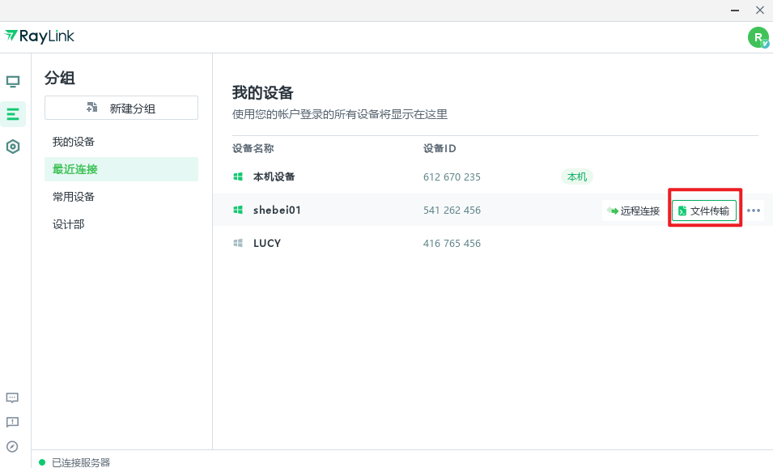

远程技术支持的一条链：RayLink 嵌进我每周三次的客户服务流程
把 RayLink 嵌进远程技术支持的完整工作流——从被控端授权、主控并行发起、会话内文件传输到日志归档，一条链打通五个城市的客户。
我每周要给分布在三个城市的五位客户做远程技术支持。以前这套流程要在三四个软件之间来回切：先用 QQ 远程连上桌面，客户要发截图或日志文件就切到微信传，需要语音沟通又跳去飞书会议，会话结束还要手动把操作记录复制粘贴进飞书文档做归档。来回切换的间隙客户那边屏幕可能已经灰了，文件传完再切回远程连接偶尔还会断。五个客户跑完一趟下来，光切换和重连的时间就能再处理一个客户的问题。
现在这条链基本只用 RayLink。它的RayLink官网上对这套工作流场景有详细的介绍，不是说它功能多全，而是它把这条流程上原本散在各处的环节接成了一条连续的管道——从被控端的首次授权，到主控端并行发起连接，会话里的文件传输和语音同步，再到会话结束后的录屏归档，全都在同一条连接里完成，不用跨软件。
旧流程卡在哪
先把旧流程的断点列清楚，才能知道新流程具体补了哪几环。
第一断在被控端的准入门槛。以前用的软件要么要求被控端有人在旁边点开接受，要么每次都要重新输一串验证码。客户那边大多是四五十岁的行政或财务，电脑上装的安全软件又多，弹窗稍微复杂一点就不敢点。RayLink 的无人值守访问在被控端登录同一账号后，主控端可以直接发起连接不用对方确认——第一次配好之后，后面每次都省了这个环节。
第二断在会话内的协同成本。远程桌面开着，客户突然说要传个 Excel 过来，我这边得先停手操作，切到另一个 IM 软件接收文件，再切回来继续远程。传完如果需要对着文件里的数据改配置，还得把文件从微信下载目录里拖到桌面。RayLink 会话里有内置的文件传输，不用最小化远程窗口，直接拖文件进会话窗口或者点工具栏的文件按钮就能发，收发完自动同步到两端的默认下载目录，不用手动挪位置。
第三断在多客户并行的瓶颈。以前同时开两个远程会话，其中一个稍微卡一点就得关掉另一个，怕带宽不够两边都卡。RayLink 的通道和连接会话是两个独立的概念——通道管的是"同账号几台主控可以同时发起连接"，连接会话管的是"一台主控同时控几台被控"。我这个账号开了两个通道，办公室的台式机和手机可以同时各自远程，每台主控又能同时开最多五个连接会话，所以三个城市的五个客户我基本能同时处理，谁那边先弄完谁先下，不用排队等资源。
新流程怎么嵌进去
整套流程跑下来大概是这样的。
被控端那边，客户先从官方下载拿到客户端装好，我第一次远程每个客户的时候，会顺手帮他们做两件事：一是在客户端的「我的」→「移动设备管理」里完成授权，二是开启无人值守访问。授权有次数限制——每个账号每月最多五次操作、每台设备每月一次，所以换新手机的时候得算好额度，注销旧的再授权新的会同时消耗两台设备的当月次数。但这些都是一次性的，配完之后后面每次远程主控端直接发起连接就行，客户那边的安全软件弹窗也基本不会再拦。
主控端这边，我有个固定的桌面主控机，上面开着两个连接会话窗口。一个窗口专门管安卓设备——客户里有两个用安卓手机需要远程协助的，另一个管 Windows 桌面。画面清晰度默认设高清，遇到客户那边网络差或者用手机热点的情况降到流畅档位。码率预算是共享的，清晰度拉高了帧率就得降，反过来也一样。日常文档处理、点鼠标改配置这种场景，帧率 30 足够了，把码率省下来投给清晰度更划算。
会话里的语音沟通用 RayLink 的语音同步功能，不用再切飞书会议。文件传输直接拖进会话窗口，收完自动落盘，下次远程需要翻之前的文件就在下载目录里找。整个过程里主控机这边的窗口不用切来切去，操作始终在远程会话的全屏界面里进行。

最容易断链的两个点
这套流程跑了两个月，有两个地方出过问题，后来找到规律就再没踩过。
第一个断链点是移动授权的规则限制。有次我给客户换新手机，注销旧设备授权再给新手机授权，结果发现当月额度用完了，只能等下月重置才能连上。授权规则写在客户端的会员中心里，但很容易忽略——每台设备每月只能授权一次，注销和授权共用额度，换设备等于一次消耗两次。后来我把换手机这件事提前记在日历里，每月初额度刷新的时候处理，就没再撞上过额度耗尽的墙。
第二个断链点是远程画面的码率预算分配。有次在客户那边调一个 4K 的设计稿，画面默认的高清档位码率不够，远程看文字还行但颜色有偏差。我拉到超清档位之后帧率掉到了 15 左右，鼠标操作开始有延迟。后来去RayLink文档翻了一下才知道码率和帧率共享同一个预算——要画面清晰就得牺牲流畅度，要操作跟手就得牺牲画质。设计稿这种特殊场景我开超清加 4:4:4 真彩模式，帧率降到 20 左右能接受；日常文档处理就固定在高清 30 帧，两边都不耽误。
效果和边界
效果是实在的。以前五个客户跑完一趟下来，去掉等待和切换的时间，实际操作时间大概在三小时左右。现在一套流程下来基本压在两个半小时以内，省下来的半小时大多是以前切换软件和等文件传输的间隙。会话结束之后录屏自动存在云端，我在飞书文档里写归档的时候直接引用录屏链接，不用手动导出来再上传一次。
但这套流程不是所有情况都划算。比如客户那边用的是 iOS 设备，RayLink 目前只能观看不能控制，遇到这种情况还得换别的软件。另外通道数和连接会话数都是个人版的上限，客户数量超过十个之后就得考虑转企业版开更多通道。移动设备的授权上限会员档是每月五次，个人版一次授权的设备数也有限制，这些硬边界在做客户规划的时候得提前算进去。
写在最后
远程技术支持这条链路，说到底是在有限的带宽和两端的安全策略之间找平衡。RayLink 不是第一个做远程控制的软件，但它把这条链路里原本需要跨软件衔接的几个环节——准入、会话、协同、归档——揉进了同一条连接里。我用它之后最大的感受不是"效率提升了多少"，而是少了每次切换软件的那几次手动复制粘贴，少了几次因为窗口焦点切换导致的误操作，少了几次文件传完再切回来的等待间隙。这些细碎的省下来的时间，积少成多就是实打实的效率。
这份软件资料我分别同步到了GitHub、Gitee和GitCode三个仓库，国内访问不了 GitHub 的时候直接换 Gitee 或 GitCode 就行。